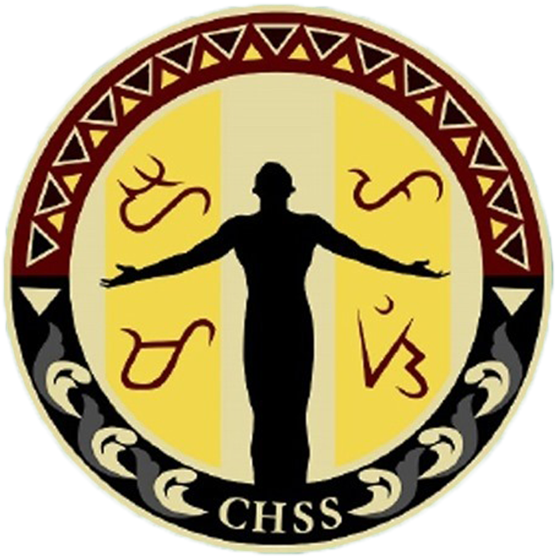

University of the
Philippines Mindanao
SHAPING MINDS THAT SHAPE THE NATION
College of Humanities and Social Science

The Humanities and Social Sciences are the study of human behaviour and interaction in social, cultural, environmental,
economic and political contexts. The Humanities and Social Sciences have a historical and contemporary focus, from personal
to global contexts, and consider challenges for the future. The humanities entail the study of the human world and society from a critical perspective. This field includes popular majors like English, history, and philosophy.
The social sciences focuses on subjects like economics, psychology, and history, while the humanities explore philosophy, languages and literature, and the arts. Students following this pathway develop strong communication and critical thinking skills, as well as an understanding of cultural differences.